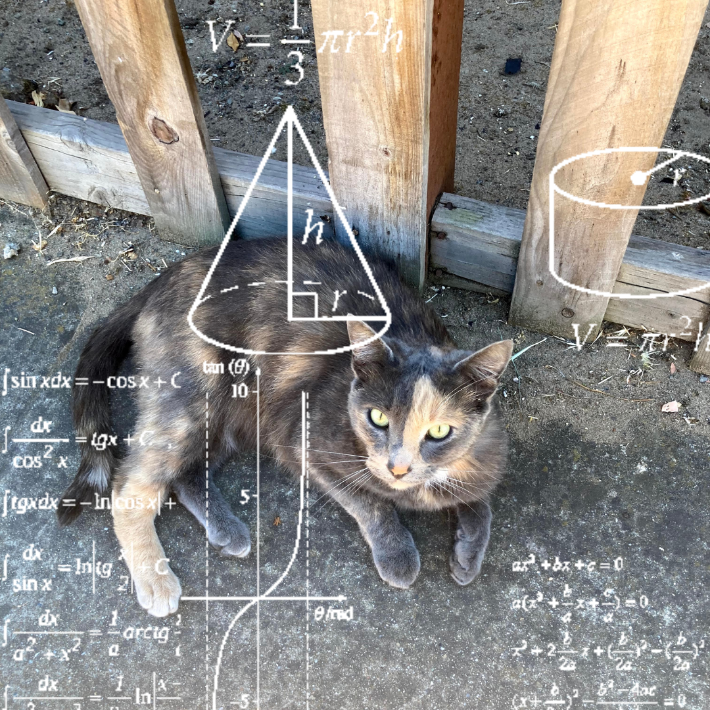

Lab 6: More Complicated HTML
Subject of this Lab
This lab was about using complex tags and elements in HTML and how CSS can affect the look of your page. Mostly we worked with the form element which allows us to collect information from site visitors using various methods. We learned to do this with input and label tags that define the type of form: radio, checkbox, etc. and the information within that form. Implementing the CSS file showed us the changes CSS can make and how.
Difficulties Faced
I had two issues while doing this lab, firstly my radio input field wasn't working properly, I was able to select multiple options. I figured out my error on W3 Schools—I mistakenly named each input differently like with "checkbox," once I made the names the same everything was working. My second problem was with the CSS, the background color for the #content div wasn't extending to the bottom of my form. Upon checking the CSS I noticed the height element for div#content was set to 80vh but my form goes past my screen's viewport so I changed the height to 100% which worked.
Our Results
The completion of this lab resulted in an uploaded lab6 page with working checkboxes, radio buttons, a dropdown, text, and password input as well as a submit button which links to google through the action attribute and GET method which places the data within the URL.
Go to My Homepage